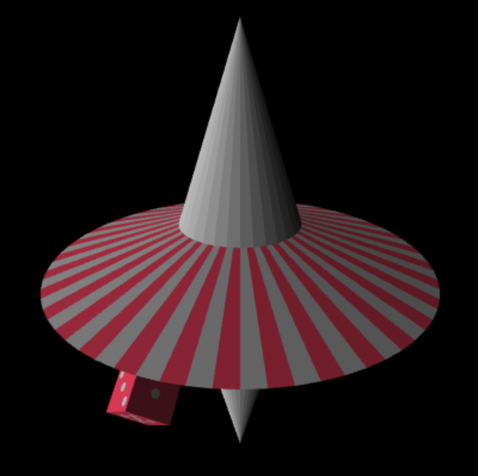
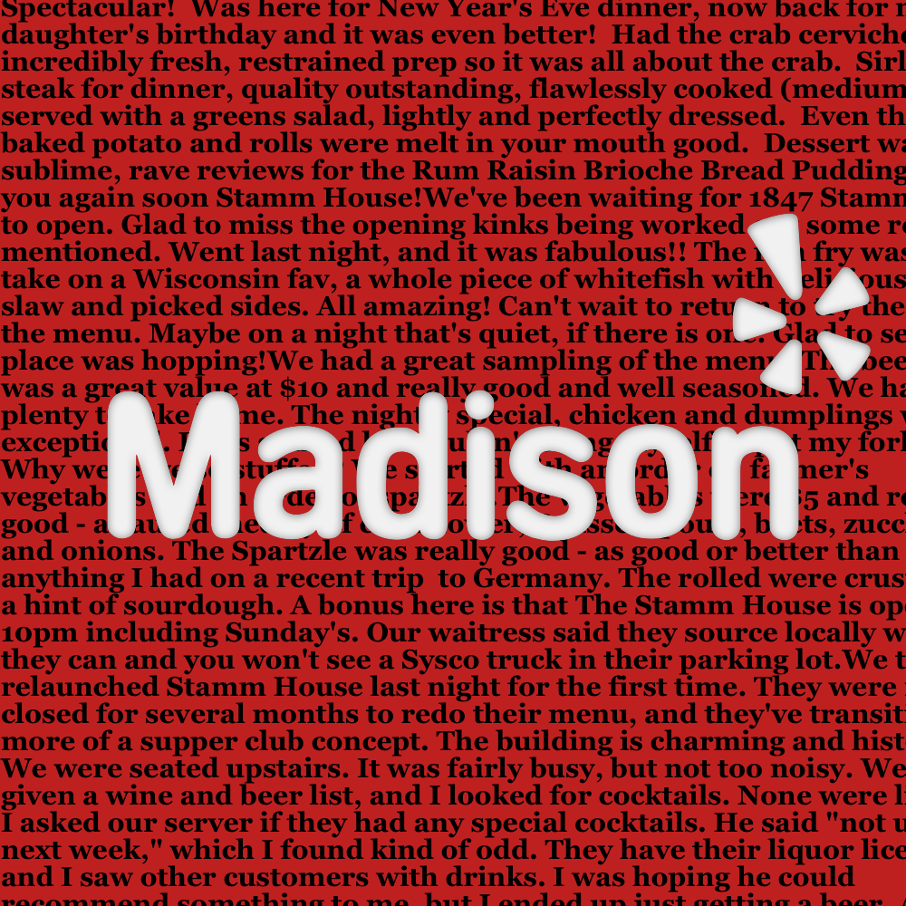
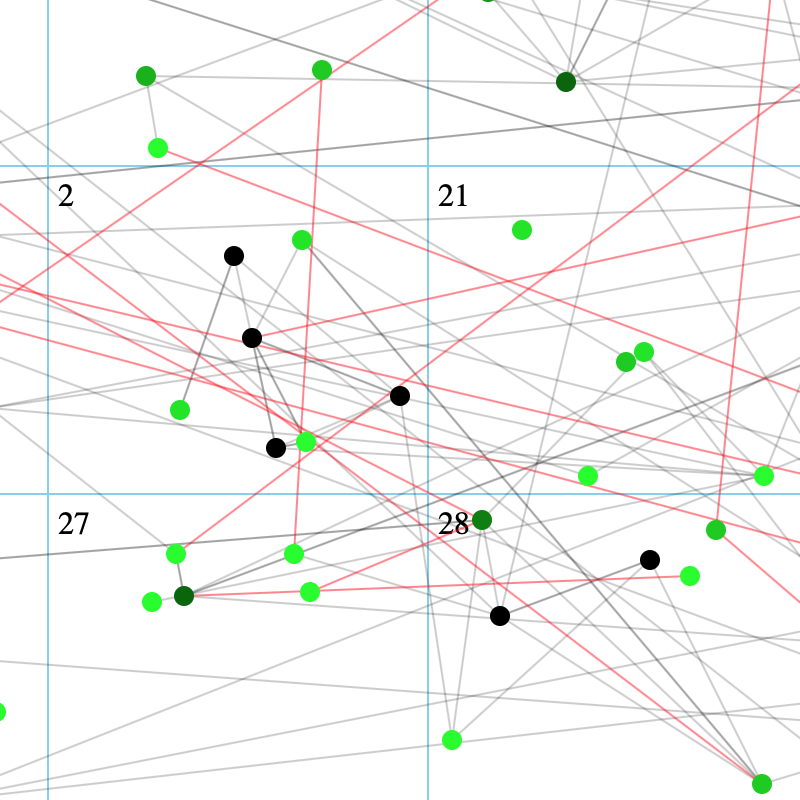
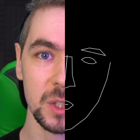
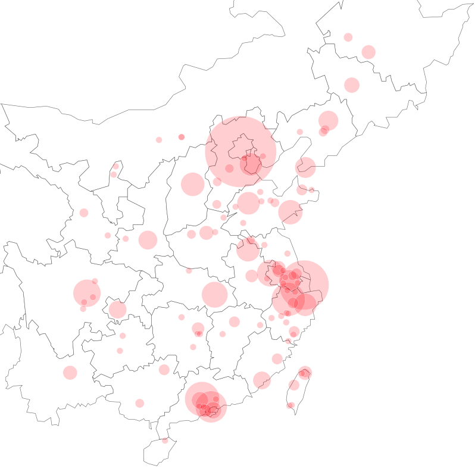

My research interests are machine learning interpretability, fairness, security, and visual analytics.
News
Nov. 2019
I will present my
T Cell Classification
poster at
oSTEM '19.
See you in Detroit (really miss the Midwest winter!).
Oct. 2019
I will attend
VIS '19 in Vancouver. Come to talk to me :)
Aug. 2019
Submitted my first paper on
bioRxiv. Check it out!
Apr. 2019
Apr. 2019
Excited to present my T-cell classification project as a poster in
GLBIO '19.
Research
My current research focuses on Human-Centered AI through interactive visualization.
I got my B.S. from UW–Madison, where I
worked on fluorescent cell image classification and drug discovery with
Anthony Gitter.
I also worked closely with Michael Gleicher and Yu Hen Hu.
MLsploit
Mentor: Polo Chau, Sept. 2019 - Present
- Cloud-based platform that enables researchers and students to rapidly evaluate
and compare state-of-the-art adversarial attacks and defenses for machine learning models
- Design and develop visualization techniques to compare adversarial attacks and defenses
Cell Image Classification
Mentor: Anthony Gitter, Dec. 2017 - Aug. 2019
- Classify T-cell and breast cancer cell types using fluorescent images
- Compare and analyze various classifiers: logistic regression, fully connected
neural network, convolutional neural network and transfer learning
- Interpret feature representations from different learning layers in the transfer learning model
Cell Painting and Drug Discovery
Mentor: Anthony Gitter, July 2018 - Aug. 2019
- Analyze about 1 million 5-channel cell-painting images of bone tumor cells
- Explore latent space between the image space and chemical molecule space
- Study how to remove batch effects of microscopy images at scale
Video Object Tracking
Mentor: Yu Hen Hu, Feb. 2017 - Dec. 2017
- Study how to track car driver’s head position and orientation from low-quality traffic video
- Develop semi-automatic video annotation software with Viola-Jones frontal face detector for training object tracking algorithms
Facial Reenactment
Mentor: Yu Hen Hu, June 2017 - Dec. 2017
- Implement real-time face tracking algorithms on iOS devices
- Train a facial reenactment model using GANs and port it to iOS devices
Papers
CNN 101: Interactive Visual Learning for Convolutional Neural Networks
Zijie J. Wang, Robert Turko, Omar Shaikh, Haekyu Park, Nilaksh Das, Fred Hohman, Minsuk Kahng, Duen Horng (Polo) Chau. arXiv:2001.02004. 2020.
Classifying T cell activity in autofluorescence intensity images with convolutional neural networks
Zijie J. Wang, Alex J. Walsh, Melissa C. Skala, Anthony Gitter. Journal of Biophotonics 2019.
Talks
Classifying T cell activity with convolutional neural networks
Zijie J. Wang, Alex J. Walsh, Melissa C. Skala, Anthony Gitter
In UW–Madison Senior Honors Thesis Symposium '19.
Posters
Classifying T cell activity with convolutional neural networks
Zijie J. Wang, Alex J. Walsh, Melissa C. Skala, Anthony Gitter
In ISCB GLBIO '19,
Morgridge SAB '19,
oSTEM '19.
Using transfer learning to classify breast cancer cells with fluorescence imaging
Zijie J. Wang, Tiffany Heaster, Quan Yin, Alex J. Walsh, Melissa C. Skala, Anthony Gitter
In UW–Madison Undergraduate Symposium '18.
Selected Undergraduate Projects

Iteractive 2D, 2.5D and 3D computational graphics with shaders and textures, created by using HTML canvas and webGL.

Sentiment analysis: predicting Yelp ratings based on text comments of Madison restaurants. This project won the in-class Kaggle competition.

Flexible and robust Mixed Integer Quadratic Programming model written in Julia to solve a real-life group assignment problem. It won the best project.
Fun
Convenient macOS command line tool for uploading screen-shots from the clipboard to Imgur. This app is featured on the official Imgur website.

MacOS GUI used to auto-annotate facial landmarks from a video. These landmarks can further be used to train GANs.

Interactive geographic visualization for studying where UW–Madison Chinese undergraduates are from.